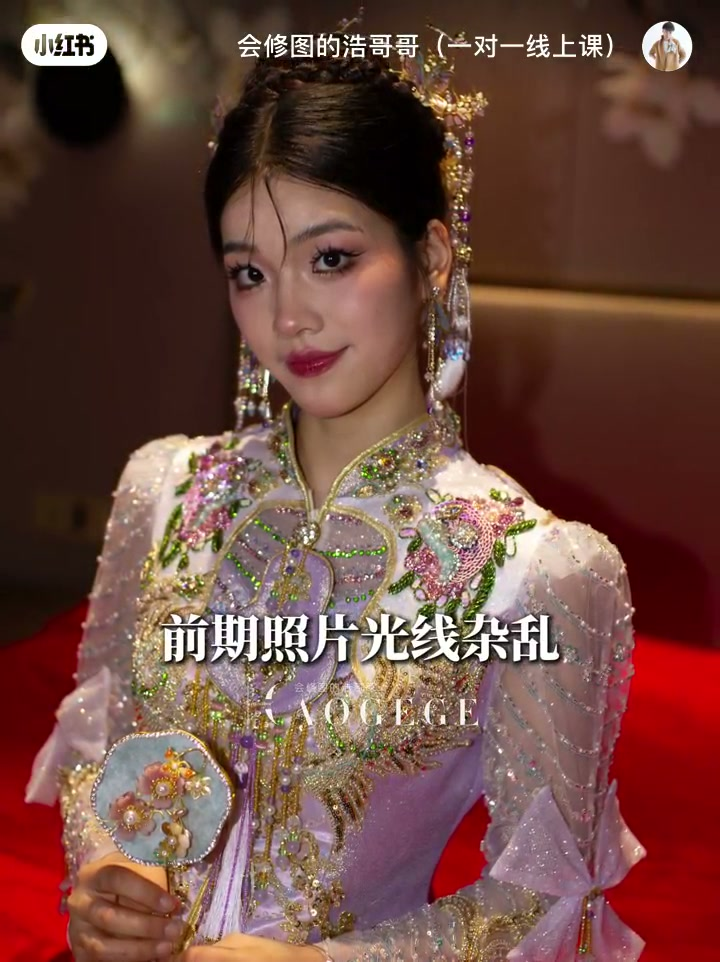
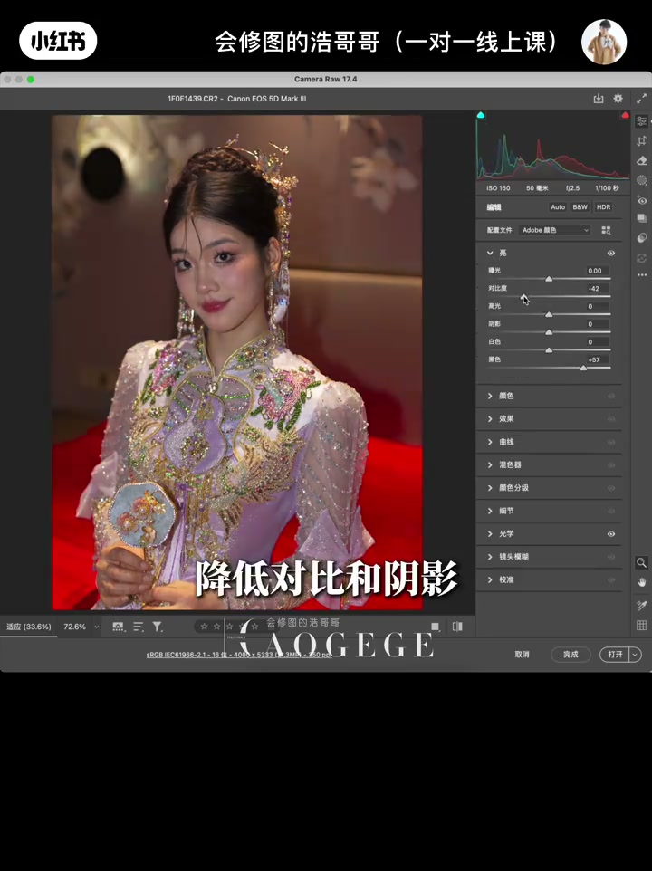
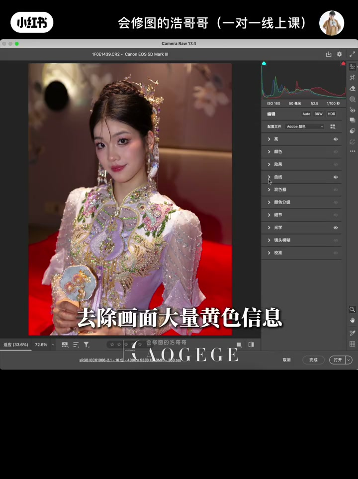
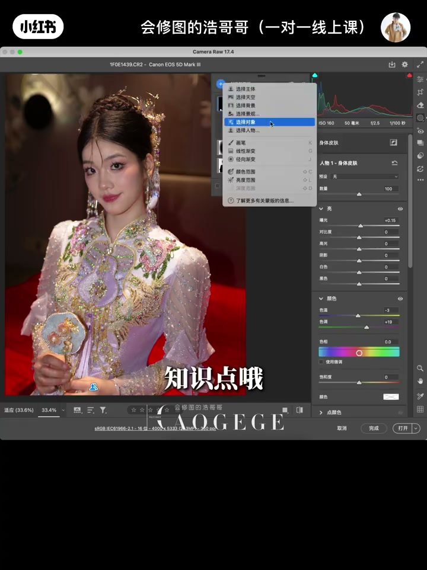

内容要点
修图师浩哥哥用一分钟演示如何把一张光线杂乱、肤色蜡黄的新娘跟妆废片调成高级白亮透。流程：先分析底片问题（光线无主次、背景抢主体、肤色蜡黄不均），进 Camera Raw 后开启光学去除暗角，提高黑色、降低对比和阴影回拉细节，再稍加高光和白色；用 RGB 曲线拉 S 型增强对比，蓝色曲线中部定点提亮去黄；最后通过背景蒙版（镜像蒙版反向）和人物蒙版分区处理，并在颜色分级里给高光加少量蓝色，完成肤色统一与空间层次。
知识结构
底片光线杂乱无主次、背景光感太亮抢主体、视觉中心不突出、前后虚实不够、肤色蜡黄不均、妆感油腻、头部暗部细节缺失。
Camera Raw 开启光学去暗角；提高黑色、降低对比和阴影控回画面信息；稍加高光和白色提高整体光感。
RGB 曲线拉 S 型加强对比；蓝色曲线中部定点提亮，去除画面大量黄色信息。
背景蒙版（镜像蒙版反向）调整背景过亮信息建立空间层次；人物蒙版选身体皮肤统一肤色；颜色分级给高光加入少量蓝色。
白亮透调色四步：先诊断（光线/肤色/细节），再在 Camera Raw 里用「提黑降对比」回拉信息，用 RGB S 曲线和蓝色曲线中部提亮去黄，最后用背景/人物蒙版分区处理并给高光加蓝。核心是让主体突出、肤色干净、层次分明。
00:00-00:26先看底片：问题都在哪里
视频以一张「客妹前期不满意的新娘跟妆」照片开场，UP 主先逐条列出底片的问题：「前期照片光线杂乱、没有主次；背景光感太亮，抢掉了人物主体，视觉中心不够突出；拍摄前后虚实不够；另外照片人物对比略重，肤色蜡黄不均、不够干净；新娘妆感略显油腻、不够柔和；头部的暗部细节缺失比较严重——很明显需要修改。」
先诊断再动手，是这条一分钟教程的顺序感来源。

00:26-00:51Camera Raw 基础与曲线：提黑去黄
把照片导入 PS 的 Camera Raw 后，第一步：「光学打开，去除照片四周暗角。」第二步处理光感：「点开亮度基本页面，提高黑色、降低对比和阴影，控回画面整体信息；稍加高光和白色，提高人物整体光感。」
第三步上曲线：「选择曲线，RGB 曲线中正拉 S 型曲线加强画面对比；蓝色曲线里中部定点提亮，去除画面大量黄色信息。」这一步直接回应了「肤色蜡黄」的诊断。


00:51-01:20蒙版分区与颜色分级：统一肤色、拉开层次
基础调整后照片还没有层次，UP 主开始分区处理：「选择蒙版，点击背景，调整背景过亮信息；选择新建镜像蒙版、反向，继续调整背景与人物的空间层次。」
再处理人物：「再次新建，选择人物蒙版，选择身体皮肤，调整新娘人物肤色。」这里他特别给出知识点：「画面人物肤色不同一，可以反复多做几次蒙版达到效果。」最后「回到基础颜色分级，给照片高光加入少量蓝色偏色」，完成白亮透的整体氛围。

完整转录（45段）
以下文本由 Whisper medium 模型自动转录，可能存在少量识别误差，已尽可能修正。
了解底层调色逻辑
只需一分钟让皮肤通透明亮
先点赞收藏 浩哥哥来教你
这是一张客媚前妻不满意的新娘跟装
我们先来看一下这张底片的问题
前期照片光线杂乱 没有主刺
背景光感太亮 抢掉了人物主体
视觉中心不够突出
拍摄前后虚实不够
另外 照片人物对比略重
肤色蜡黄不均 不够干净
新娘妆感略显油腻 不够柔和
头部的暗部细节确实比较严重
很明显需要修改
把照片导入PS Camera后
光学打开 去除照片四周暗角
光感较重 点开亮度基本页面
提高黑色 降低对比和阴影
控回画面整体信息
稍加高光和白色竖直
提高人物整体光感
选择曲线
RGB曲线中
正拉S型曲线加强画面对比
蓝色曲线里中部定点提亮
去除画面大量黄色信息
来 看一下效果
照片没有层次
选择蒙版点击背景
调整背景过量信息
选择新建镜像蒙版 反向
继续调整背景与人物的空间层次
再次新建 选择人物蒙版
选择身体皮肤
调整新娘人物肤色
知识点哦
画面人物肤色不同一
这里我们可以反复多做几次蒙版
达到效果
回到基础颜色分级
给照片高光加入少量蓝色偏色
效果完成
我是会修图的浩哥哥
如果觉得分享有用
记得点赞收藏